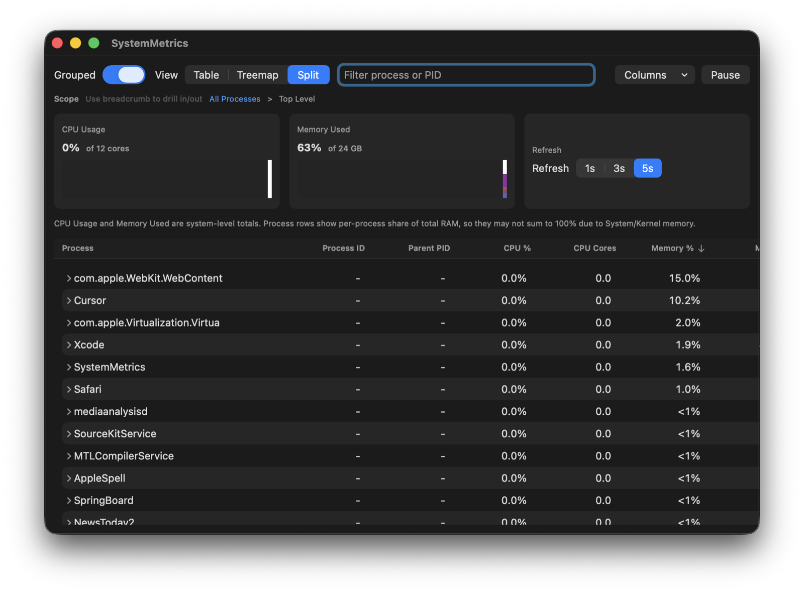
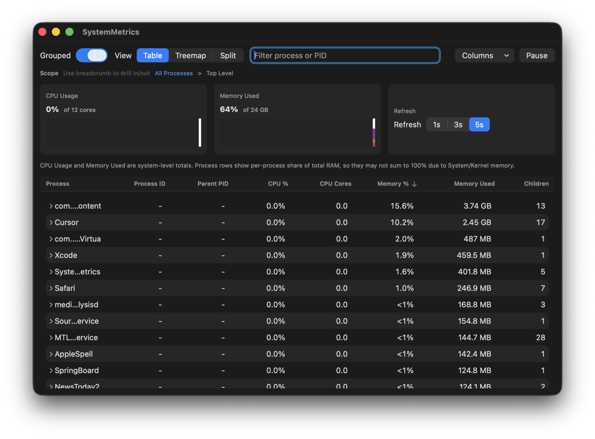
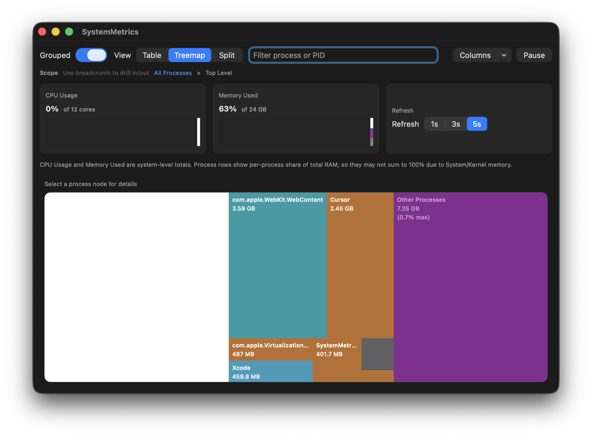

Process Hierarchy
Group by process family and inspect parent/child relationships with sortable columns.
Native macOS app
SystemMetrics gives you a clean process table, grouped hierarchy, and interactive treemap so you can find CPU and memory heavy apps faster than with traditional monitors.
Sold and operated by Quality Capital LLC.

Group by process family and inspect parent/child relationships with sortable columns.
Click into high-memory regions and quickly identify what is consuming resources.
Live CPU and memory pressure cards with configurable 1s, 3s, or 5s sampling.
A quick look at the main views included with SystemMetrics.


Complete checkout, then continue to your secure download page.
Buy SystemMetrics for macOS ($2.50)Merchant of record: Quality Capital LLC